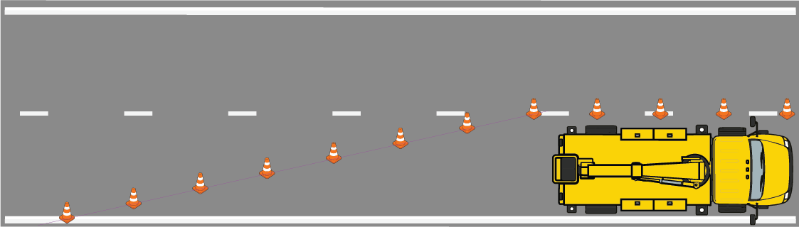
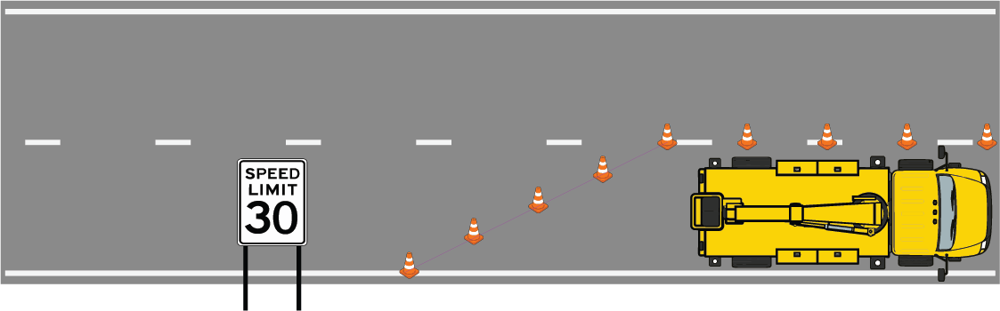
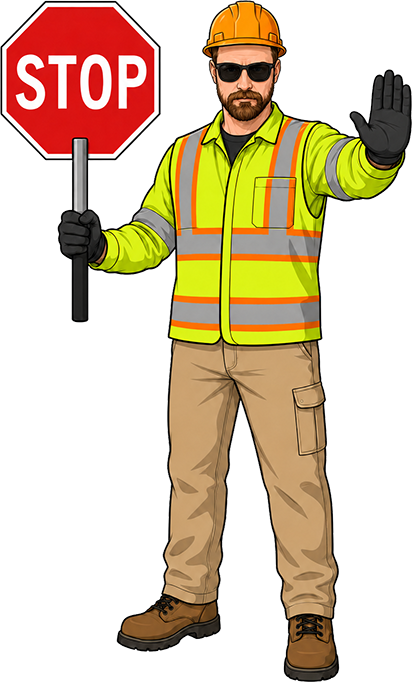
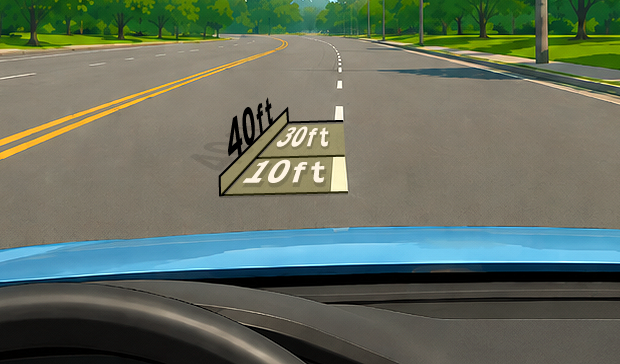
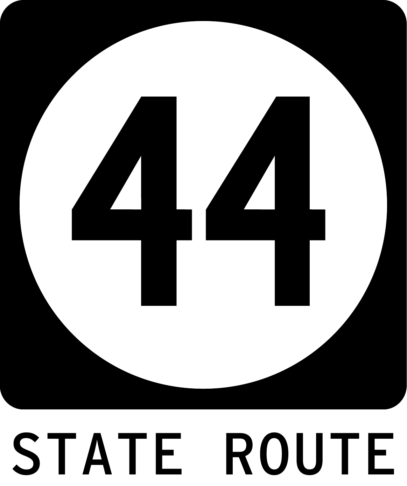

Louisville work zone safety
Check if a lane closure taper looks too short.
Pick the posted speed to see the expected merge taper in feet and lane-line cycles.

Long, gradual taper
Abrupt, short taper
If you see a worker holding a STOP/SLOW paddle standing near the road, this is likely a flagging setup, which should use a 50 to 100 ft taper. If traffic is merging from a closed lane, continue below.
What is the speed limit where the lane is closed?
Use this for a lane closure, where traffic moves from a closed lane and into an open lane.
Expected merge taper
If it looks closer to only 3 cycles, it may be worth reporting.
Looks much shorter? Report itMeasure by sight
One lane-line cycle is about 40 ft.
A typical broken white lane line has a 10 ft painted line followed by a 30 ft gap. Count the line plus the following gap along the cone taper.

| Cycles | Approx. distance |
|---|---|
| 2 cycles | 80 ft |
| 3 cycles | 120 ft |
| 5 cycles | 200 ft |
| 7 cycles | 280 ft |
| 10 cycles | 400 ft |
| 15 cycles | 600 ft |
What to watch for
A good taper makes the merge feel natural.
Temporary traffic control should make the next move obvious before drivers reach the cones. With enough taper length, drivers have room to see the closure, adjust speed, and merge smoothly.
Red flags from a driver's view
These signs do not prove a violation by themselves, but they can mean the setup deserves a closer safety review.
Cone-count shortcut: Cone count alone does not determine compliance, but if a faster-road taper uses only a few cones, that can be a red flag.
- The lane closes suddenly.
- Cones force an abrupt merge.
- Drivers brake hard or swerve.
- Work trucks are parked in a lane with no clear taper.
- Workers are walking in or near the travel lane.
- The taper is much shorter than it should be.
Louisville reporting
Report a potentially unsafe lane closure.
If a taper looks dramatically shorter than the benchmark, report what you saw so the right agency can review it.
Who should I contact?

State route, highway, or interstateCompany logo visible? Include it in your report if you can see it. You do not need to contact the company yourself.
Copy report note
Use this in Metro311, email, or a KYTC form.
Why it exists
TaperCheck turns standards into a quick public safety reference.
The goal is not to attack workers in the field. The goal is better accountability, training, planning, and oversight from the companies and agencies responsible for temporary traffic control.
We all drive through these. Workers deserve protection. Drivers deserve warning. TaperCheck helps the public recognize when something looks dangerously short.
TaperCheck is an educational estimate based on standard merge taper-length logic. It is not an official engineering determination.